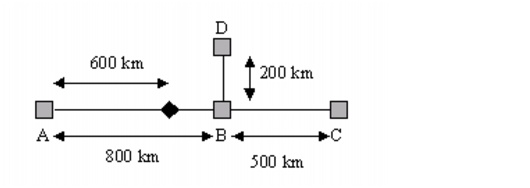

Transparent Networks > Algorithm Descriptions > Selective Regeneration
Selective Regeneration
The Link Design operation (described in Link Design) places amplifiers and regenerators on the links to overcome transmission length limitations. For each link that exceeds the MTL, SP Guru Transport Planner places regenerators every MTL kilometers/miles (at least). This is called in-line regeneration.
Besides in-line regeneration, SP Guru Transport Planner can also perform in-node regeneration on a connection as it passes through a node. Whether this occurs depends on two factors:
- If the incoming and outgoing fibers on which the connection through the node is routed are not equipped with the same WDM line system, regeneration is always performed.
- If the incoming and outgoing fibers on which the connection through the node is routed are equipped with the same WDM line system, regeneration is performed if the distance between the last point of regeneration (in-node or in-line) and the next possible point of regeneration exceeds the MTL.
Figure 10-1 shows an example of how regeneration works. This network uses the same WDM line system on all links in the network, and this system has an MTL of 600 km. On the link A<—>B, an in-line regenerator is placed at 600 km from node A. This splits the link into two transparent sections: one 600 km and one 200 km long. This means that
- A connection between A and C requires an in-node regenerator in node B because the distance between the last regenerator (200 km) and the next possible regenerator (500 km towards node C) is 700 km and exceeds the MTL
- A connection between A and D does not require an in-node regenerator in node B because the distance between the last regenerator (200 km) and the next possible regenerator (200 km towards node D) is 400 km and does not exceed the MTL
Figure 10-1 Selective Regeneration Example

| Home © 1987-2007 OPNET Technologies, Inc. All Rights Reserved. This software may be covered by one or more U.S. Patents. See complete patent notice in the Legal Notices section. OPNET Support Center |